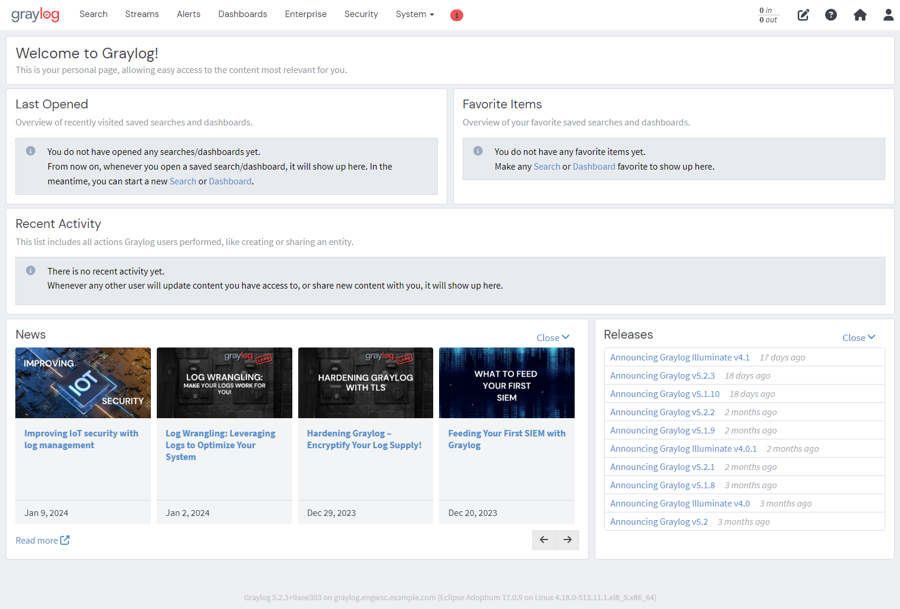
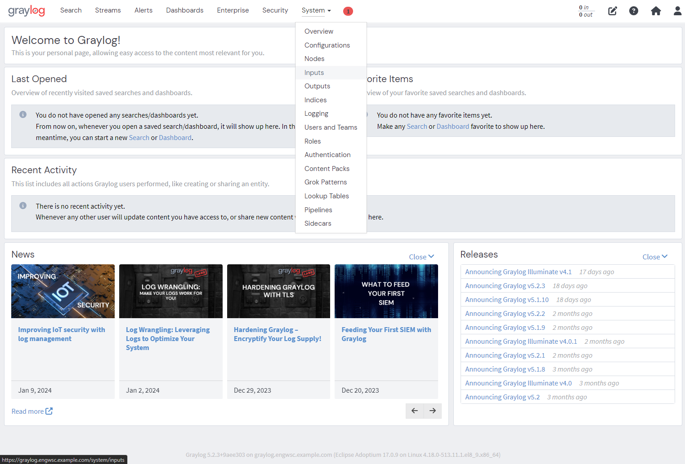
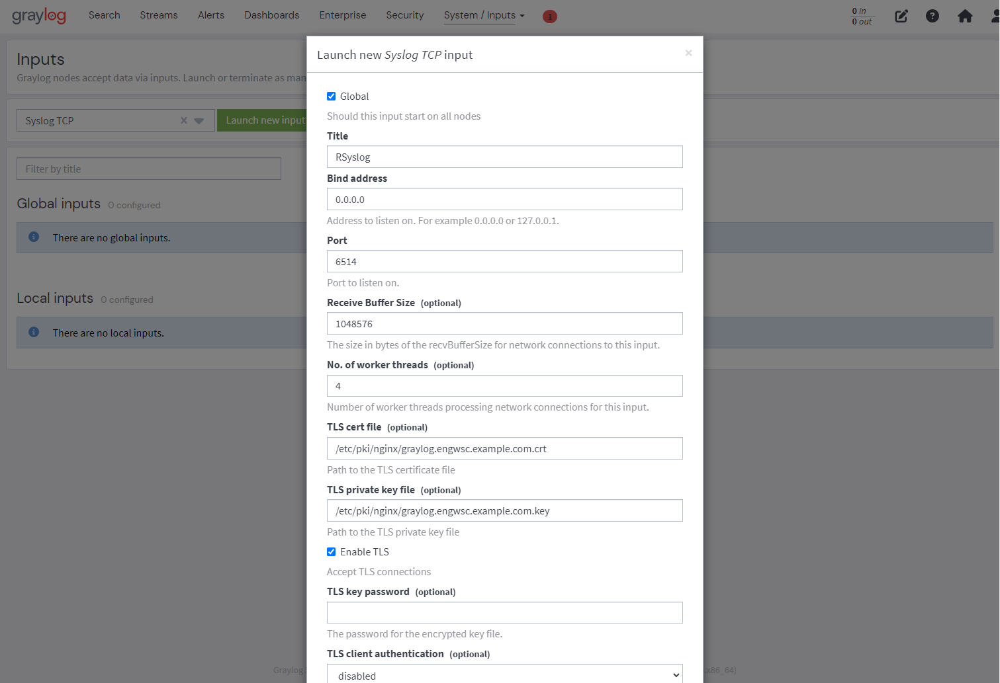
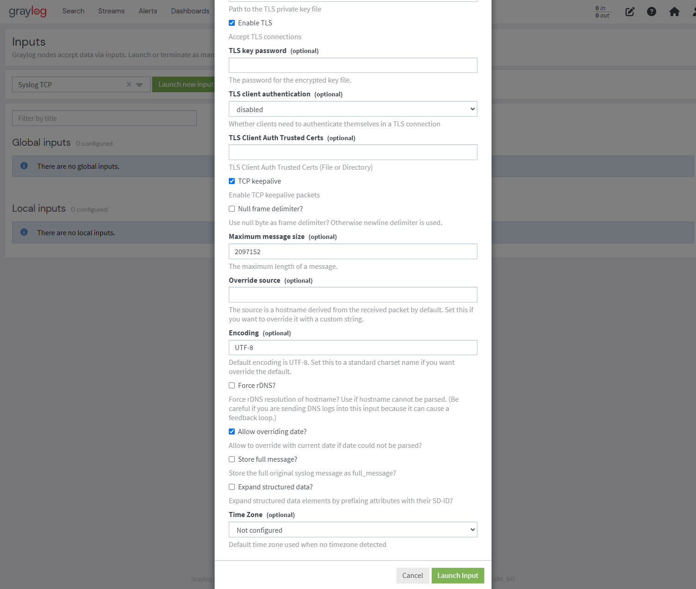

Graylog Deployment Guide#
The following instructions are for deploying Graylog.
Prerequisites#
This guide is written for a Red Hat Enterprise Linux 8 based operating system which is operating within a cluster of systems and the following are the prerequisites:
If deploying as a standalone service, adjust the hostname fields accordingly and omit steps involving IdM, NFS, and follow-on deployment guides.
Follow-on Deployments#
The following guides can be applied after the deployment of their associated nodes.
References#
These instructions were written for Graylog Open
5.2.x
Instructions are based on the following documentation:
- https://go2docs.graylog.org/5-2/downloading_and_installing_graylog/operating_system_packages.htm
- https://go2docs.graylog.org/5-2/setting_up_graylog/web_interface.htm
- https://go2docs.graylog.org/5-2/downloading_and_installing_graylog/red_hat_installation.htm
- https://go2docs.graylog.org/5-2/setting_up_graylog/https.html
- https://go2docs.graylog.org/5-2/getting_in_log_data/ingest_syslog.html
Post Deployment#
The Graylog can be accessed at the following URL:
https://graylog.engwsc.example.comUsername:
admin
Password:password_secret(from step 17)
Deployment Scripts#
Note
An example bash script of the instructions has been provided:
deploy-graylog.sh
Deployment Steps#
Note
Instructions assume execution using the root account.
Connect the system to the NFS Server:
See Guide: NFS Client Deployment Guide
Connect the system to the IdM Server:
See Guide: IdM Client Deployment Guide
Install Dependencies:
dnf -y install epel-release dnf -y distro-sync dnf -y install pwgen checkpolicy policycoreutils selinux-policy-devel
MongoDB#
Add the MongoDB Yum Repository:
cat > /etc/yum.repos.d/mongodb-org-6.0.repo <<EOF [mongodb-org-6.0] name=MongoDB Repository baseurl=https://repo.mongodb.org/yum/redhat/\$releasever/mongodb-org/6.0/x86_64/ gpgcheck=1 enabled=1 gpgkey=https://www.mongodb.org/static/pgp/server-6.0.asc EOF
Install MongoDB:
dnf -y install mongodb-org
Add SELinux policy to permit access to cgroup:
mkdir -p /etc/mongod/selinux/ cat > /etc/mongod/selinux/mongodb_cgroup_memory.te <<EOF module mongodb_cgroup_memory 1.0; require { type cgroup_t; type mongod_t; class dir search; class file { getattr open read }; } #============= mongod_t ============== allow mongod_t cgroup_t:dir search; allow mongod_t cgroup_t:file { getattr open read }; EOF checkmodule -M -m \ -o /etc/mongod/selinux/mongodb_cgroup_memory.mod \ /etc/mongod/selinux/mongodb_cgroup_memory.te semodule_package \ -o /etc/mongod/selinux/mongodb_cgroup_memory.pp \ -m /etc/mongod/selinux/mongodb_cgroup_memory.mod semodule -i /etc/mongod/selinux/mongodb_cgroup_memory.pp
Add SELinux policy to permit access to netstat:
cat > /etc/mongod/selinux/mongodb_proc_net.te <<EOF module mongodb_proc_net 1.0; require { type proc_net_t; type mongod_t; class file { open read }; } #============= mongod_t ============== allow mongod_t proc_net_t:file { open read }; EOF checkmodule -M -m \ -o /etc/mongod/selinux/mongodb_proc_net.mod \ /etc/mongod/selinux/mongodb_proc_net.te semodule_package \ -o /etc/mongod/selinux/mongodb_proc_net.pp \ -m /etc/mongod/selinux/mongodb_proc_net.mod semodule -i /etc/mongod/selinux/mongodb_proc_net.pp
Start MongoDB:
systemctl daemon-reload systemctl enable --now mongod
OpenSearch#
Add the OpenSearch Yum Repository:
curl -SL \ https://artifacts.opensearch.org/releases/bundle/opensearch/2.x/opensearch-2.x.repo \ -o /etc/yum.repos.d/opensearch-2.x.repo
Install OpenSearch:
dnf -y install opensearch
Configure OpenSearch:
Important
Replace
graylog.engwsc.example.comwith your hostname.cp /etc/opensearch/opensearch.yml /etc/opensearch/opensearch.yml.bak cat > /etc/opensearch/opensearch.yml <<EOF cluster.name: graylog node.name: graylog.engwsc.example.com path.data: /var/lib/opensearch path.logs: /var/log/opensearch discovery.type: single-node network.host: 0.0.0.0 action.auto_create_index: false plugins.security.disabled: true EOF
If using RHEL 9, Configure OpenSearch:
sed -i "s|/var/run/opensearch|/run/opensearch|g" /usr/lib/tmpfiles.d/opensearch.conf
Configure OpenSearch JVM:
sed -i "s|-Xms1g|-Xms4g|g" /etc/opensearch/jvm.options sed -i "s|-Xmx1g|-Xmx4g|g" /etc/opensearch/jvm.options
Configure Kernel Parameters:
sysctl -w vm.max_map_count=262144 echo 'vm.max_map_count=262144' >> /etc/sysctl.conf
Start OpenSearch:
systemctl daemon-reload systemctl enable --now opensearch
Graylog#
Install Graylog:
rpm -Uvh https://packages.graylog2.org/repo/packages/graylog-5.2-repository_latest.rpm dnf -y install graylog-server
Set required
password_secretandroot_password_sha2:
Important
Replace
GRAYLOG_SECRETwith a confidential strong password that will be used to access Graylog.# You MUST set a secret to secure/pepper the stored # user passwords here. Use at least 64 characters. # Use: SECRET=`pwgen -N 1 -s 96` # to generate a random secret SECRET='GRAYLOG_SECRET' SECRET_SHA256=`echo -n "${SECRET}" | tr -d '\n' | sha256sum | cut -d" " -f1` sed -i "s|password_secret =.*|password_secret = ${SECRET}|g" /etc/graylog/server/server.conf sed -i "s|root_password_sha2 =.*|root_password_sha2 = ${SECRET_SHA256}|g" /etc/graylog/server/server.conf
Configure SELinux:
setsebool -P httpd_can_network_connect 1 semanage port -a -t http_port_t -p tcp 9000
Configure Graylog:
sed -i "s|#elasticsearch_hosts =.*|elasticsearch_hosts = http://127.0.0.1:9200|g" /etc/graylog/server/server.conf
Start Graylog:
systemctl daemon-reload systemctl enable --now graylog-server
NGINX#
Install NGINX:
dnf -y distro-sync dnf -y install nginx
Create Self-Signed SSL Certificate:
Important
Replace values with the specifics of your network.
# Create directory structure mkdir -p /etc/pki/nginx/ chmod 755 /etc/pki/nginx/ # Create OpenSSL configuration file cat > /etc/pki/nginx/graylog.engwsc.example.com.cnf <<EOF [req] distinguished_name = req_distinguished_name x509_extensions = v3_req prompt = no # Details about the issuer of the certificate [req_distinguished_name] C = US ST = New York L = New York O = engwsc CN = graylog.engwsc.example.com [v3_req] keyUsage = nonRepudiation, digitalSignature, keyEncipherment extendedKeyUsage = serverAuth subjectAltName = @alt_names # IP addresses and DNS names the certificate should include # Use IP.### for IP addresses and DNS.### for DNS names, # with "###" being a consecutive number. [alt_names] IP.1 = 192.168.1.83 DNS.1 = graylog.engwsc.example.com EOF # Create certificate openssl req -x509 -days 365 -nodes -newkey rsa:4096 \ -config /etc/pki/nginx/graylog.engwsc.example.com.cnf \ -keyout /etc/pki/nginx/graylog.engwsc.example.com.key \ -out /etc/pki/nginx/graylog.engwsc.example.com.crt # Set permissions chown root:root /etc/pki/nginx/graylog.engwsc.example.com.key chown root:root /etc/pki/nginx/graylog.engwsc.example.com.crt chmod 600 /etc/pki/nginx/graylog.engwsc.example.com.key
Configure NGINX:
Important
Replace graylog.engwsc.example.com with the specifics of your network.
mkdir -p /etc/nginx/conf.d/ cat > /etc/nginx/conf.d/graylog.conf <<EOF server { listen 80; server_name graylog.engwsc.example.com; root /nowhere; rewrite ^ https://\$server_name\$request_uri permanent; } server { listen 443 ssl http2; server_name graylog.engwsc.example.com; ssl_certificate "/etc/pki/nginx/graylog.engwsc.example.com.crt"; ssl_certificate_key "/etc/pki/nginx/graylog.engwsc.example.com.key"; ssl_session_cache shared:SSL:1m; ssl_session_timeout 10m; ssl_ciphers PROFILE=SYSTEM; ssl_prefer_server_ciphers on; location / { proxy_set_header Host \$http_host; proxy_set_header X-Forwarded-Host \$host; proxy_set_header X-Forwarded-Server \$host; proxy_set_header X-Forwarded-For \$proxy_add_x_forwarded_for; proxy_set_header X-Graylog-Server-URL https://\$server_name/; proxy_pass http://127.0.0.1:9000; } } EOF
Start NGINX:
systemctl daemon-reload systemctl enable --now nginx
Set firewalld rules:
Important
Replace the IPv4 Address and Subnet mask with the value of your network.
firewall-cmd --zone=public --add-source=192.168.1.0/24 --permanent firewall-cmd --zone=public --add-service=http --permanent firewall-cmd --zone=public --add-service=https --permanent firewall-cmd --zone=public --add-port=6514/tcp --permanent firewall-cmd --reload
Graylog Configuration#
Log into Graylog:
Important
The remainder of this guide requires using the Graylog Web Interface.
Log into Graylog using user
adminand passwordpassword_secret.Graylog: https://graylog.engwsc.example.com

Create Input:
Initial Landing Page

System -> Inputs

Click dropdown and select Syslog TCP
Click on Launch new input

Fillout form:

Click the Global check box (box should be checked)
In the Title box enter: RSyslog
In the Port box enter: 6514
In the No. of worker threads box enter: 4
In the TLS cert file box enter: /etc/pki/nginx/graylog.engwsc.example.com.crt
In the TLS private key file box enter: /etc/pki/nginx/graylog.engwsc.example.com.key
Click the Enable TLS check box (box should be checked)
In the TLS client authentication box enter: disabled
Click the TCP keepalive check box (box should be checked)
Ensure the Allow overriding date? check box is checked
Click the Launch Input button

If successful, input should start automatically and say 1 RUNNING